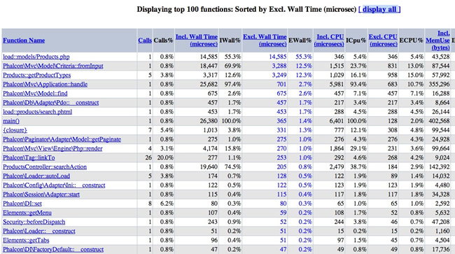

Optimus PHP
Kristopher Wilson
I Make PHP Things
Twitter: @mrkrstphr
GitHub: mrkrstphr
Rants: kristopherwilson.com
Performance
The capabilities of a machine, vehicle, or product, especially when observed under particular conditions.
Is there a problem?
If not, you may be over optimizing.
Just go write more code instead.
Is there a problem?
You'll know.
People generally start to get complain.
What do we optimize?
I heard that single quotes are faster than double quotes, so I'm going to find and replace all my source code to get rid of double quotes quotes!
Congrats. You just made your application 0.0005ms faster per request.
Micro Optimizations are a Sham!
Okay, some of them might be legit...
for ($i = 0; $i < count($someCountable); $i++) {
// do something cool
}
// so much performance...
$count = count($someCountable);
for ($i = 0; $i < $count; $i++) {
// do something cool marginally faster!
}
Embedding count in the for loop causes PHP to count that variable over and over.
Micro Optimizations are (mostly) a Sham!
phpbench.comFocus on the Big Picture
What slows us down?
What slows us down?
- PHP
- Bad Code
- Database
- Frameworks
- External APIs
- Long Running Processes
Upgrade PHP
Upgrade PHP
PHP 5.3 is 20% father than PHP 5.2.
http://news.php.net/php.internals/36484Upgrade PHP
PHP 5.4 is 20-50% faster than PHP 5.3
http://news.php.net/php.internals/57760Upgrade PHP
PHP 5.6 brought some relatively small improvements, mostly in the case of processing POST vars quicker and more efficiently.
http://www.lornajane.net/posts/2014/php-5-6-benchmarksPHP 5.2 -> PHP 5.6
45-70% improvement!

Upgrade. NOW.
PHP 7
85% faster (using Wordpress) than PHP 5.5
Amazeballs.

http://zsuraski.blogspot.com/2014/07/benchmarking-phpng.html
HHVM?
So fast.
Fix Bad Code
Fix Bad Code
Database Queries are Expensive
Fix Bad Code
Cache Repetitive Queries
foreach ($customers as $customer) {
// ...
$sql = 'SELECT * FROM users WHERE id = ?';
$rep = $db->fetchRow($sql, [$customer->getSalesRepId()]);
// ...
}$reps = [];
foreach ($customers as $customer) {
// ...
if (isset($reps[$customer->getSalesRepId()])) {
$rep = $reps[$customer->getSalesRepId()];
} else {
$sql = 'SELECT * FROM users WHERE id = ?';
$rep = $db->fetchRow($sql, [$customer->getSalesRepId()]);
}
}Fix Bad Code
Eagerly Load Related Data
$sql = 'SELECT * FROM customers c JOIN users u ON u.id = c.sales_rep_id';
$customers = $db->fetchAll($sql);
foreach ($customers as $customer) {
// do outrageously awesome things
}Look, Ma! Only 1 query!
Fix Bad Code
Don't Misuse ORMs
$customers = $repository->getBy(['status' => 'active']);
foreach ($customers as $customer) {
$rep = $customer->getSalesRep(); // query
$orders = $customer->getOrders(); // query
foreach ($orders as $order) {
$product = $order->getProduct(); // query, query, query
}
}1 + 1000 + 1000 + (1000 customers * avg 20 orders each) = 22,001 queries.
Oops.
Find Bad Code
Find Bad Code
Use a Profiler
Profiling is measuring the relative performance of your application at the code-level. Profiling will capture things like CPU usage, memory usage, time and number of calls per function, as well as capturing a call graph. The act of profiling will impact performance.https://blog.engineyard.com/2014/profiling-with-xhprof-xhgui-part-1
Find Bad Code
Profilers
- Symfony Profiler
- Zend Developer Tools
- Laravel Debugbar
- xhprof
xhprof
Light-weight hierarchical and instrumentation based profiler. Shows the path of code execution, cpu time, memory usage, etc.
xhgui
xhprof + xhgui
- Pretty!
- Graphs!
- Drill into specific runs
- Sort data
- Compare different runs
xhprof + xhgui
This guy explains things very eloquently: https://blog.engineyard.com/2014/profiling-with-xhprof-xhgui-part-1
Be smarter with Composer!
Composer Autoloading
Composer autoloading is great.
PSR-0 + PSR-4 are great.
They're slow. Way too many lookups, computations, etc...
Composer Class Map
Composer's class map will take all the classes and dump them into a giant array of class => filename.
It makes composer autoloading much faster, especially when coupled with caching
Composer Class Map
composer dump-autoload --optimizeRun this on deployment!
Your Framework is a Resource Hog!
Your Framework is a Resource Hog!
| Framework | Req/Sec |
|---|---|
| Phalcon | 822.96 |
| Slim | 399.83 |
| Kohana | 217.34 |
| Code Igniter | 187.78 |
| Silex | 179.01 |
| Laravel | 135.90 |
| YII | 123.50 |
| Fuel PHP | 116.34 |
| Zend 1 | 103.02 |
| Cake PHP | 54.97 |
| Symfony2 | 39.22 |
| Zend 2 | 36.10 |
http://systemsarchitect.net/performance-benchmark-of-popular-php-frameworks/
Frameworks?
Enable caching, especially byte code caching.
Frameworks?
Do you need one? Or will a small, simple set of components suffice?
Microframeworks
Silex and Slim are great for small projects, have a light footprint, and are fast!
Silex: silex.sensiolabs.org
Slim: slimframework.com
Phalcon!
Phalcon is a web framework implemented as a C extension offering high performance and lower resource consumption.
Optimize the Front End
Optimize the Front End
Upwards of 80% of the processing can take place in the browser.
Optimize the Front End
Minimize Your CSS and JavaScript files!
Consider using a JavaScript task runner like Grunt or Gulp, which have plugins to easily minimize your CSS and JavaScript.
Do this on deployment!
Optimize the Front End
Combine Your CSS and JavaScript files!
Combined, minified files means less files to download, less requests for the server to process.
Grunt or Gulp can also help with this. Do it on deployment!
Optimize the Front End
Don't combine Your CSS and JavaScript files!
If it's not needed on every page, you're wasting the browser's time parsing it!
Be smart.
Optimize the Front End
Use Nginx to serve static content! It's fast!
Graphs + such: http://www.theorganicagency.com/apache-vs-nginx-performance-comparison
Optimize the Front End
Use Nginx to serve gzip compressed assets!
gzip on;
gzip_proxied any;
gzip_types text/plain text/xml text/css application/x-javascript;
gzip_vary on;Optimize the Front End
Utilize browser caching to cut down on requests.
location ~* \.(?:ico|css|js|gif|jpe?g|png)$ {
expires 30d;
add_header Pragma public;
add_header Cache-Control "public";
}Optimize the Front End
Use a query string with the deployment ID to prevent caching AFTER deployment
http://aol.com/images/our-vacation-to-florida.jpg?c41fab